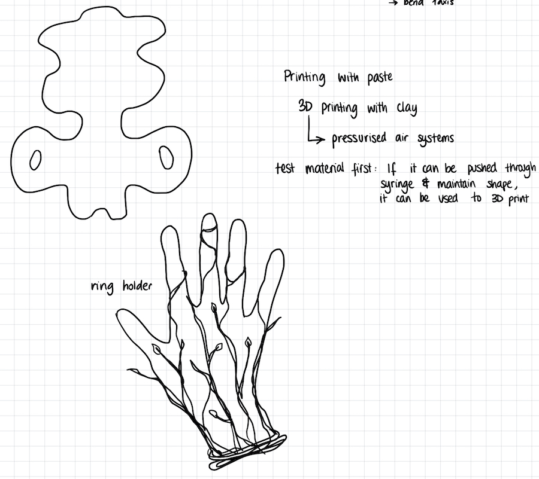
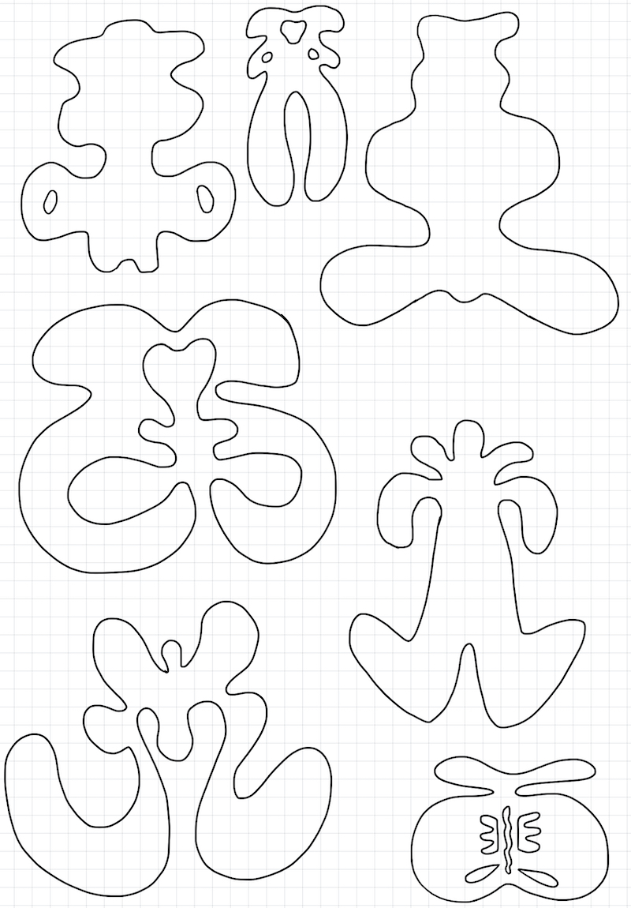
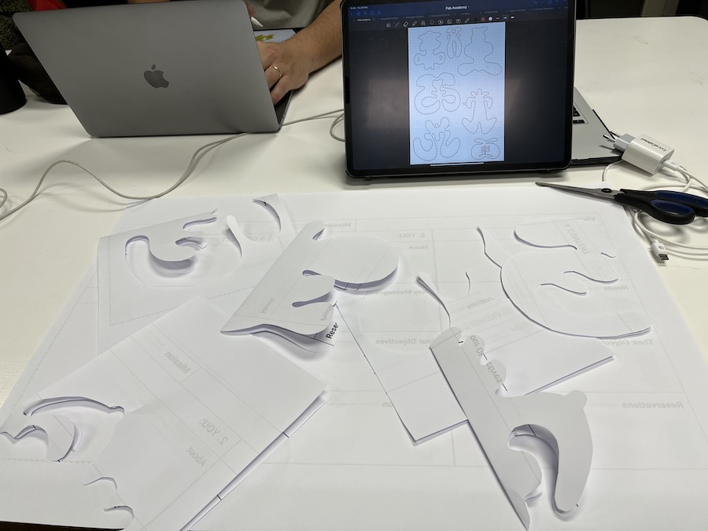
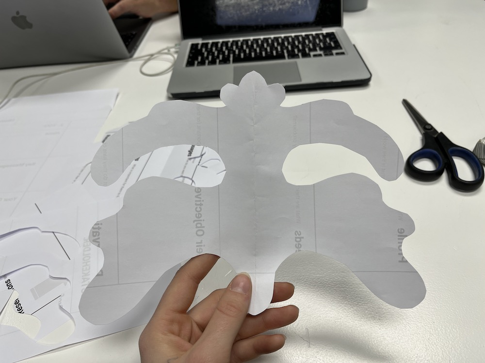
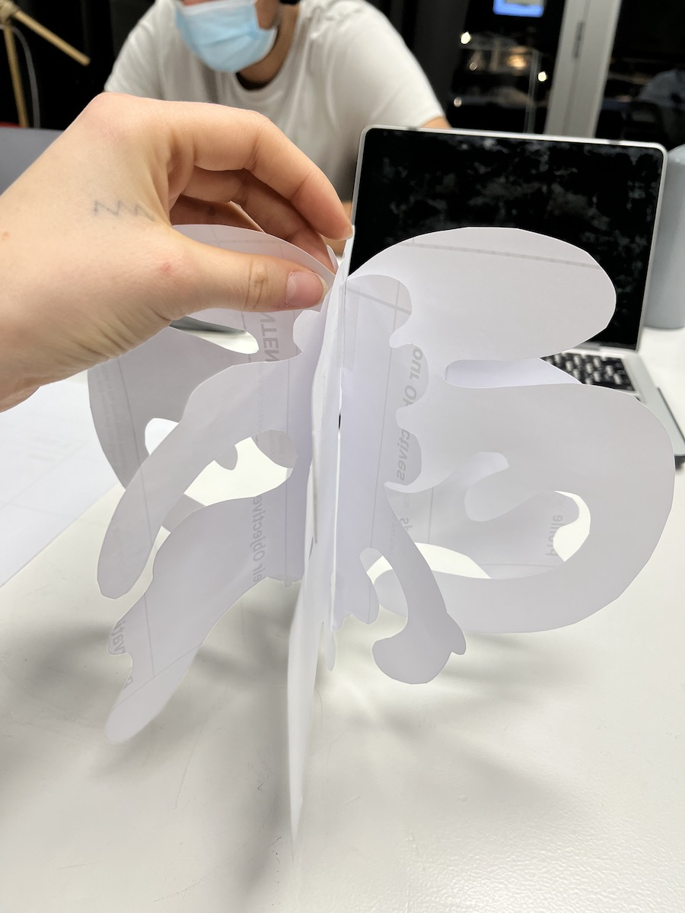
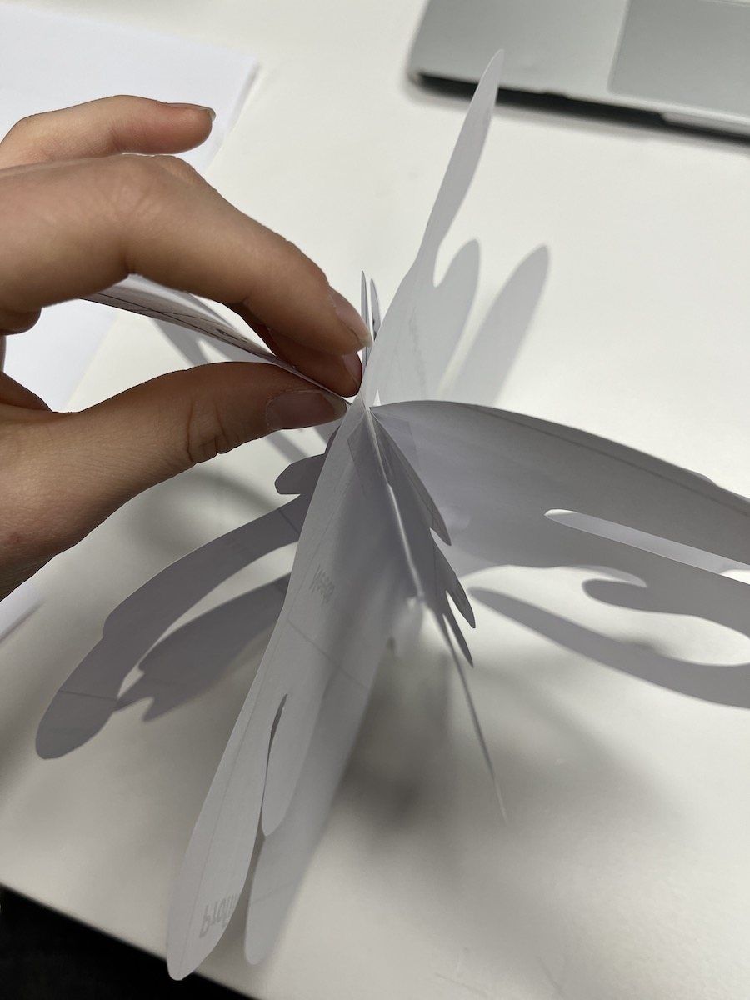
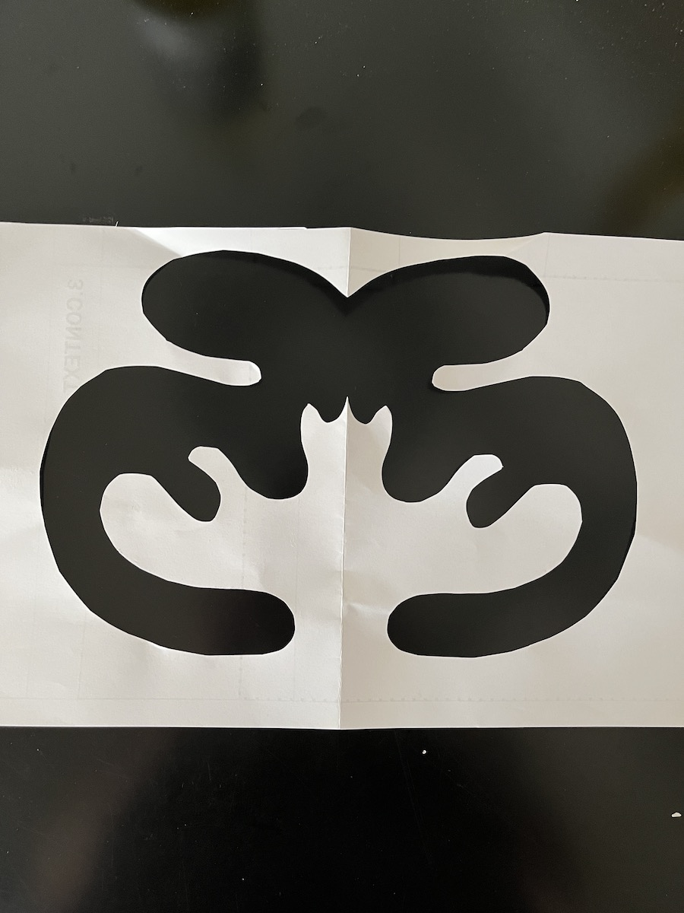
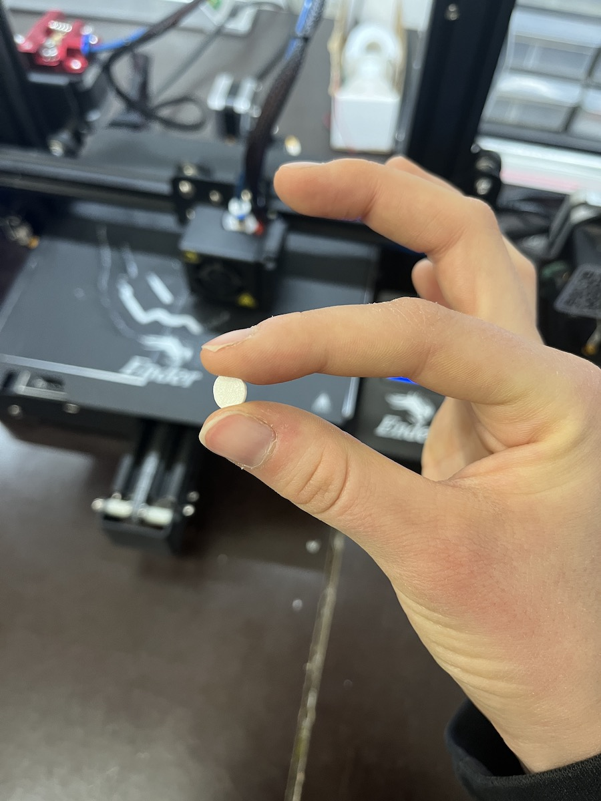
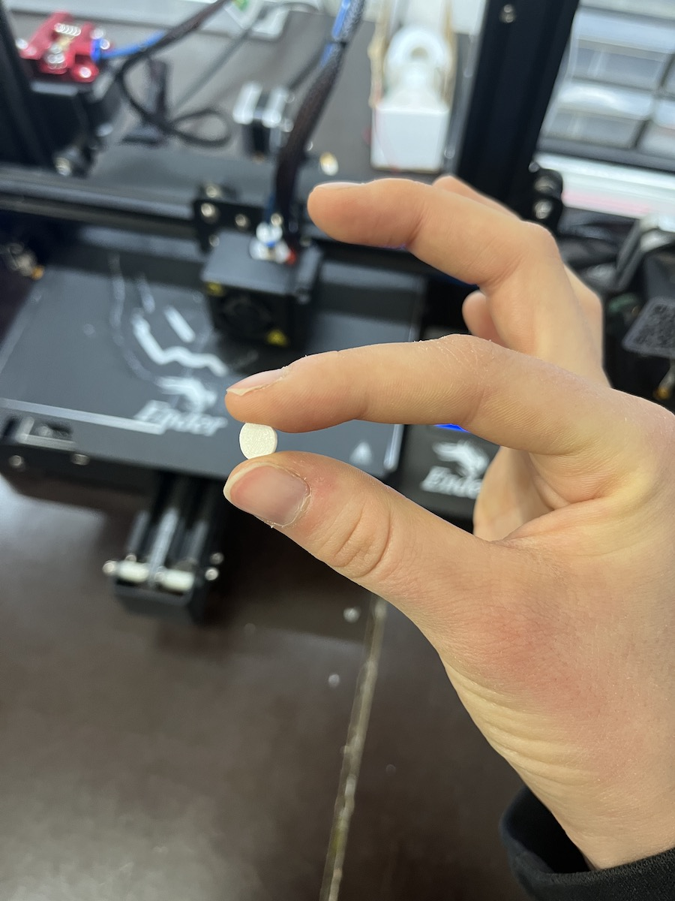
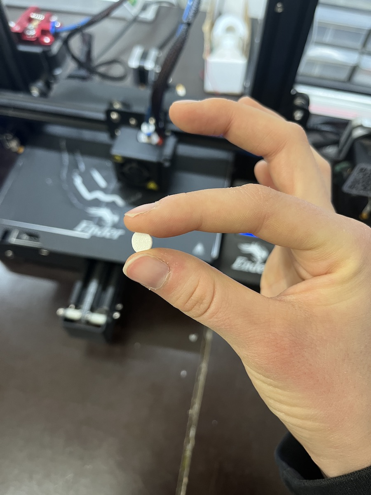

3D PRINTING
This week we learned about 3D printing and additive manufacturing in general. I was happy to learn more about the Kinect, a device ever so familiar to me, and the different ways it could be used. I mostly ever used it for motion capturing rather than 3D scanning, but I am curious to see what creative outcomes it could come up with.
After the theoretical part, the whole class was especially happy to see the more unconventional ways of 3D printing… with mashed potatoes. There was something very funny about 20 grown adults sitting in front of a machine that usually spits out plastic but instead created shapes out of mashed potatoes.
Since I have decided to tie my weekly assignments to my design interventions, I wanted to figure out how I could use 3D printing in my favor. I didn’t want to 3D print something just for the sake of it, creating unnecessary waste. I began brainstorming ideas on how I could come up with an interesting project idea.


After browsing pinterest for inspiration, I got various ideas but none of them inspired me fully. A jewellery holder, a cool lamp shade… It all seemed like it was done before.
I wanted to create something that could be used in an interactive way, possibly with lights or projections. Since I recently added Rorsauch’s ink blots to my Design space board, I wondered what they could look like if made in 3D, or from generative code. If you want to see the results from using noise + math to create computer-made inkblots, you can find it here.
I decided to explore this interest, so I prototyped a what a 3D model would look like if it had generative inkblots on various axis. The idea was to create an 3D object that had interesting shapes on which you could project a light. Through the shadows it cast, you could then ask people how they interpret them. Aa a bonus, you would spin it around, which would create a wide variety of shapes morphing in and out of themselves.





However, I realised that in the assignment requirements we were not allowed to print anything over 7cm. This was a huge bummer, so I chose to reframe my idea. What if I could incorporate laser cutting in this project?
After talking to Chris about the possibilities this project could have, I got a few new ideas as to how to continue this project. I recreated the inkblots in 2D which could be laser cut panels and designed a 3D structure that would hold the various pieces in place, allowing them to spin on the center axis.
These were the laser cut pieces I designed, creating cuts based around my favourite inkblots I made using Touchdesigner. I exported them as .ai files and followed the usual laser cut process to cut cardboard.
This was the "cap" I modelled in blender to keep the laser cut slices in place.
When 3D printing the .stl file, I realised that I accidentally made a mistake with the scale: it was 5x smaller than what I modelled. This means that while exporting the file from Blender, there must have been an error with the scaling. I fixed the error and sent it to print again.

This is the final result:


 
